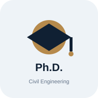
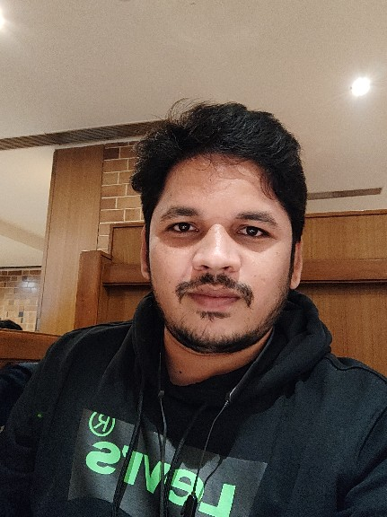
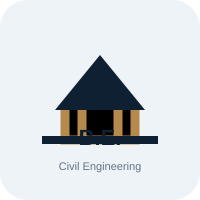

2019
Ph.D. in Civil Engineering
NIT Warangal
Doctoral research in Civil Engineering
YOURCIVIL ENGINEERING • ACADEMIA • RESEARCH • CONSULTANCY
Academic, research and professional portfolio focused on sustainable materials, BIM, IoT applications, construction management, and repair & rehabilitation.
I am Dr. Srikanth Koniki, an Assistant Professor in Civil Engineering with interests spanning sustainable construction materials, construction management, BIM, IoT-enabled applications, structural assessment, and repair & rehabilitation.
This website presents my academic journey, professional experience, research activities, consultancy involvement, and academic positions.

NIT Warangal
Doctoral research in Civil EngineeringNIT Warangal
Advanced construction technology and management
RVR & JC College of Engineering, Guntur
Undergraduate Civil EngineeringTeaching, student mentoring, academic coordination, project monitoring, structural/construction related activities and consultancy support.
Research coordination, mentoring coordination and technical committee responsibilities.
Quantity estimation, monthly reports, bill preparation and concrete planning associated with hospital construction works.
Site inspections, quality monitoring and technical reporting for infrastructure/building works.
My research combines sustainable materials, structural behaviour, digital construction technologies and intelligent infrastructure monitoring.
FRC, GGFRC, alccofine/fly ash based materials, recycled and alternative construction resources.
BIM/Revit based time–cost optimisation, planning, project monitoring and digital construction workflows.
Low-cost sensing, deterioration monitoring, embedded systems and data-driven infrastructure assessment.
Assessment, strengthening and rehabilitation of concrete and structural systems.
Experience supporting building and infrastructure projects through technical coordination, site supervision, design inputs, cost estimation, BOQ review, bill verification, quality monitoring and project coordination.
TPQC and quality-monitoring related involvement.
Design inputs, supervision and construction coordination.
Technical communication between stakeholders and project teams.
Civil Engineering Department
Civil Structural Design & Project Monitoring Committee
Student activities, technical events and professional association coordination
Course coordination, class/attendance in-charge and student mentoring
Research and technical coordination
Assistant Professor
Civil Engineering Department
Chaitanya Bharathi Institute of Technology (A), Hyderabad